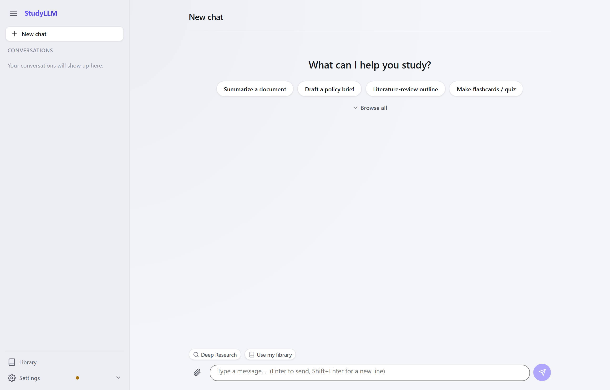
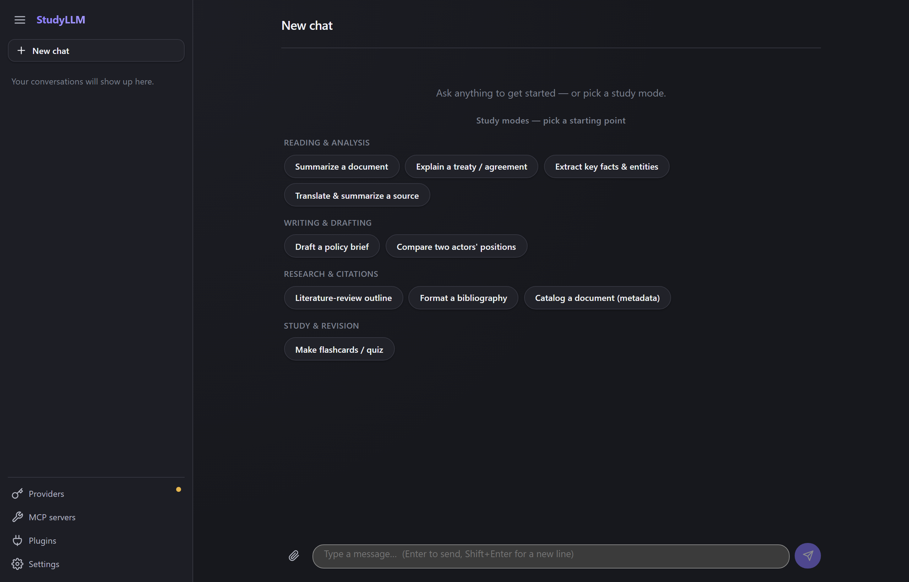
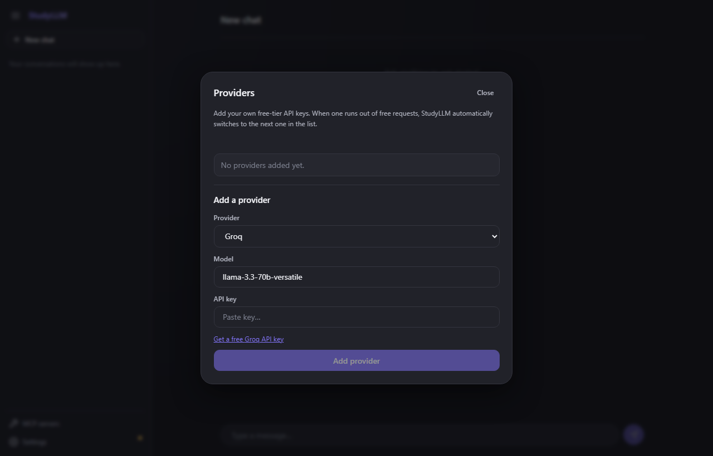
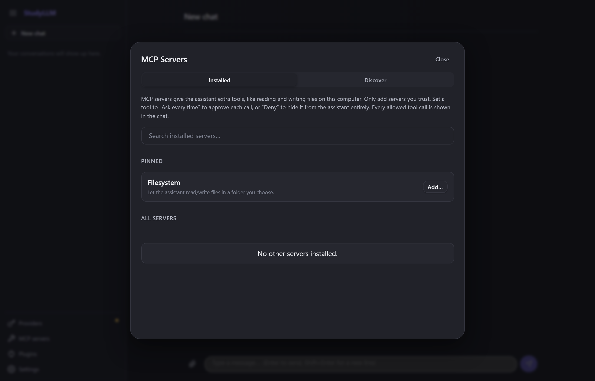

Bring your own free-tier API keys from providers like Groq or Cerebras. StudyLLM rotates between them automatically so you never get stuck on a rate limit — no subscription, no server, no catch.
Installers publish automatically to the GitHub Releases page. Prefer to build from source? See the README.


Everything a paid AI subscription gives you, minus the bill.
Use free API keys from providers like Groq or Cerebras instead of paying for ChatGPT Plus or Claude Pro.
Add more than one provider key and StudyLLM automatically switches the moment one runs dry.
Keys live in your OS's secure keychain. Chats go straight from your computer to the AI provider — no StudyLLM server in between.
Let it read and write files in a folder you choose, so it can actually help with notes, essays, and projects.
Browse and install more capabilities for the AI in a couple of clicks, with clear trust indicators.
Native desktop installers for Windows, macOS, and Linux — no browser tab required.
Set up in under a minute, then give the AI real work to do.
Open Settings, paste in a free API key from a provider like Groq, and you're chatting — no card, no account with StudyLLM itself. Add a second or third provider and StudyLLM fails over between them automatically.

Turn on filesystem access to a folder, or browse the marketplace for more tools. Every tool call is shown transparently in the conversation, and you decide per-tool whether it runs automatically, asks first, or is denied outright.
